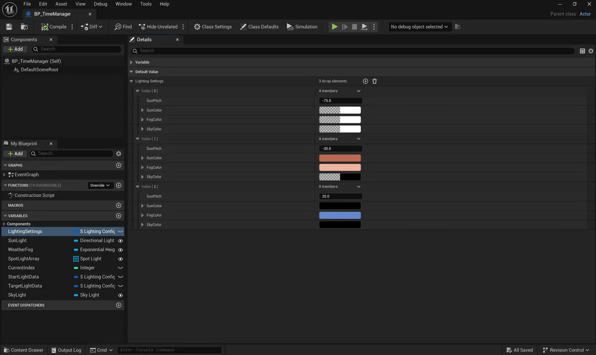
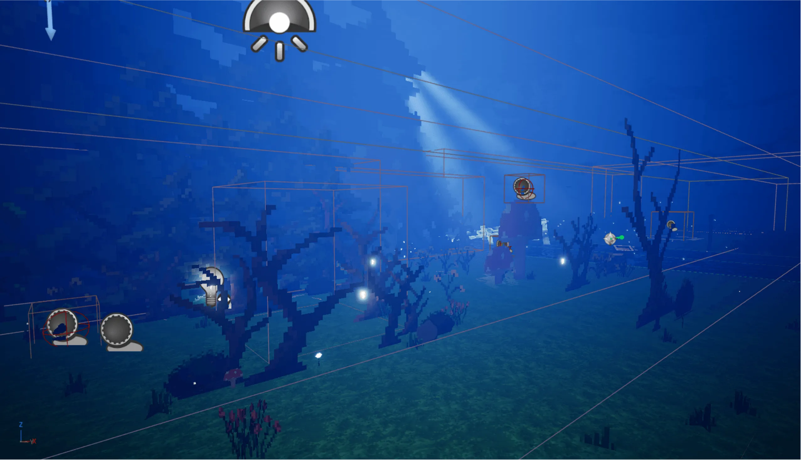
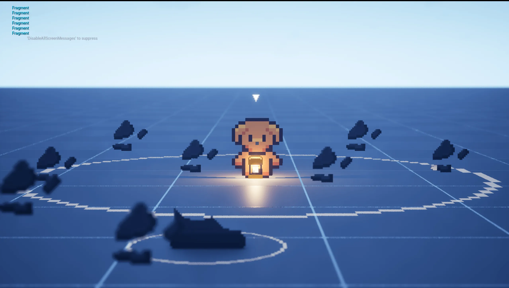
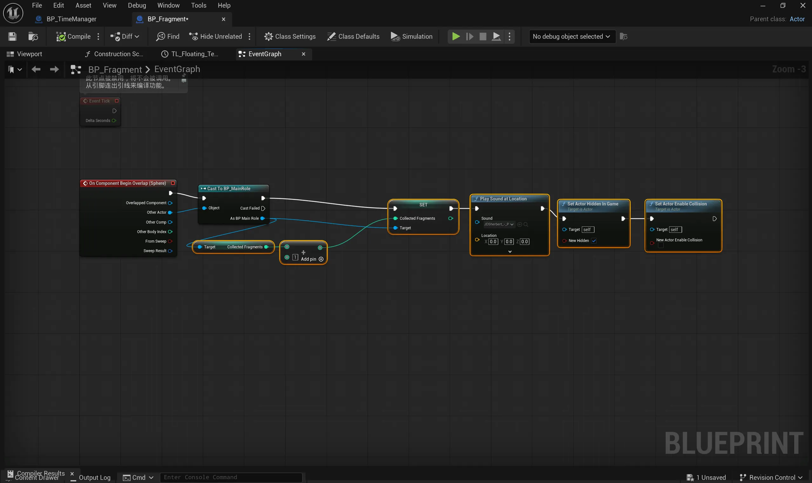
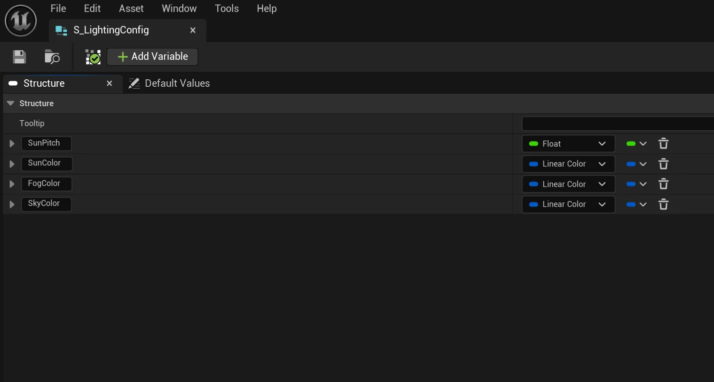

The Bridge of
Pixel and Light
A controlled study of how lighting changes visibility, search behaviour and immersion in a 2.5D pixel environment.
Research
Question
2.5D pixel art combines hand drawn sprites with three dimensional space. Its compressed visual language removes many of the depth cues found in conventional 3D scenes. Lighting therefore carries more responsibility for separating objects, revealing space and directing attention.
The study asks how changes in illumination affect scene readability and player behaviour. It focuses on visibility, search efficiency, attention and exploration. The central premise is that lighting is a structural cue rather than a purely aesthetic layer. The analysis is informed by visual perception research from Ware and navigation research from Darken and Sibert. Cognitive load and limited attention provide the main behavioural framework.

Research
Method
The experiment used one fixed environment with three lighting conditions. Day provided high visibility. Sunset reduced ambient illumination while retaining strong environmental structure. Night removed most ambient light and made the handheld lantern central to navigation and search. Scene layout, fragment positions, controls and mechanics remained unchanged.

Experimental design
Nine participants completed all three conditions. A 3 by 3 Latin square balanced the order of Day, Sunset and Night to reduce learning, order and fatigue effects.
Participant measures
After each condition, participants rated visibility, search efficiency, attention, exploration, atmosphere and immersion on a five point Likert scale. Gameplay was also recorded for later observation.
Behaviour and analysis
UE5 Blueprints recorded completion time and lantern duration. Lantern uses, fragments found through scanning and backtracks were also documented during each trial. Because the sample was small, the final analysis focused on descriptive statistics and cross condition patterns.
Technical Implementation

Engine and rendering
Unreal Engine 5 was selected for its real time Lumen global illumination and its support for 2D sprites inside a 3D scene. Directional Light, Sky Light and Volumetric Fog were tuned for each condition. Bloom and colour grading supported the visual atmosphere. Pixel assets were arranged across background, midground and foreground layers to create a controlled 2.5D space.

Lantern and scanning
The lantern combines local illumination with a spherical scanning volume. A Boolean state controls the Point Light and collision volume together. Overlap checks identify nearby fragments without adding visible prompts that could bias the experiment.

Fragment collection
An OnComponentBeginOverlap event validates the player actor. A successful pickup increments the collection count, plays audio feedback, hides the fragment and disables its collision. This keeps collection state consistent across trials.

Environment and data
A custom S_LightingConfig structure stores SunPitch, SunColor, FogColor and SkyColor. Timeline and Lerp nodes interpolate between fixed lighting states. The same system supports repeatable transitions and trial logging.
Prototype Development
Results
Findings
Across nine participants, the three lighting conditions produced distinct behavioural patterns. Lower illumination reduced perceived visibility and increased the need for careful search. It also increased lantern use, backtracking and task time. The strongest result was not a simple bright versus dark effect. Each condition changed how players searched.
Objective behavioural measures from nine participants
| Measure | Day | Sunset | Night |
|---|---|---|---|
| Completion time (s) | 106.01 | 96.26 | 124.41 |
| Lantern-scanned fragments (mean) | 0.33 | 1.44 | 3.00 |
| Lantern uses (mean) | 0.56 | 0.67 | 1.00 |
| Lantern duration (s) | 11.64 | 42.97 | 98.67 |
| Backtracks (mean) | 0.33 | 0.22 | 0.78 |
Subjective ratings on a five point scale
Means are calculated from the nine participants' five point ratings. Negatively worded search items were reverse coded so higher scores indicate more efficient searching.
Participant preferences from nine participants
selected Day as the easiest condition for identifying objects at a glance
selected Day as the easiest condition for finding objects
selected Sunset as the strongest atmosphere
selected Night as the most immersive condition
selected Night as the most difficult condition
“Very dark!”
Night“Hard to see clearly.”
Night“Nice atmosphere.”
Sunset / atmosphere feedback“The atmosphere at night feels the best as it feels like actually exploring a forest and guiding yourself through.”
Night / immersion feedback“Location memory of objects made it easier to find all required objects in day and sunset settings.”
Search behaviourWhat
Darkness Changed
Difficulty and immersion did not move together.
Day produced the strongest visibility ratings, yet participants collected the fewest fragments. Night produced the weakest visibility ratings, yet every participant collected all three fragments. The difference came with a clear change in search strategy.
of participants considered Night the most difficult condition.
selected Night as the most immersive condition.
Night produced the lowest search efficiency rating at 1.75, compared with 3.08 in Day and 2.69 in Sunset. Participants also reported more scanning and slower searching. The qualitative responses suggest that reduced illumination changed how spatial information was acquired rather than simply making the scene darker.
Design
Implications
Lighting can shape behaviour without changing the level itself. The findings suggest four practical principles for 2.5D pixel games.
Use light to guide behaviour
Reduced visibility encouraged slower movement, scanning and path revisiting. Bright conditions supported faster visual sampling but also produced more omissions.
Balance efficiency and immersion
Night created the strongest challenge and the highest immersion preference. Sunset offered the shortest completion time and the strongest atmosphere. Lighting can therefore be tuned to the intended experience.
Use diegetic tools as guidance
The lantern restored access to local information without adding an external interface prompt. Its use supported complete fragment collection in Night.
Treat lighting as a continuous parameter
Sunset combined the shortest completion time with the strongest atmosphere preference. This supports a graded approach to illumination rather than a simple bright or dark choice.
Reflection
& Next Steps
Unreal Engine 5 was chosen because Lumen allowed real time changes in illumination while keeping the 2.5D scene intact. The lantern scan was implemented through an invisible collision volume. This avoided visual prompts that could have influenced participant behaviour.
The main limitation is the small sample of nine participants. The study therefore reports descriptive patterns rather than inferential claims. Future work could use a larger sample, eye tracking, more varied level geometry and finer lighting gradients. Separating the lantern's lighting and scanning functions would also help isolate their individual effects.
Participation was voluntary and anonymised. Informed consent and data protection procedures were followed under the University of York research ethics process. Generative AI was used only for technical assistance with Blueprint refinement and a small number of 2D textures. It was not used for data collection, recruitment, writing or analysis.